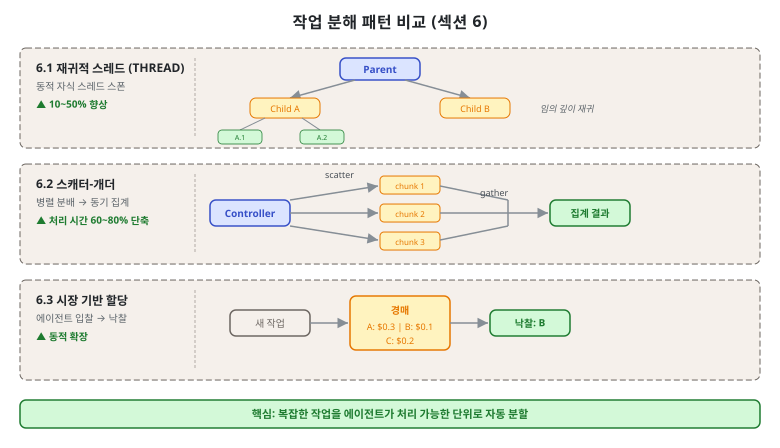
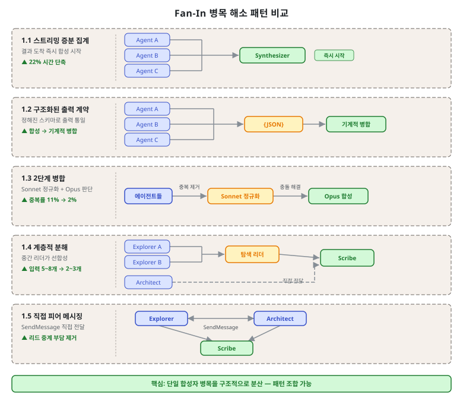

제4단원. 작업 분해 패턴 — 복잡한 작업의 에이전트 단위 분할¶
학습 목표¶
이 단원을 마치면 다음을 할 수 있다:
- 재귀적 스레드 생성, 스캐터-개더, 시장 기반 할당 패턴을 설명할 수 있다
- Fan-In 병목의 원인을 분석하고 5가지 해소 전략을 적용할 수 있다
- 작업의 특성에 맞는 분해 패턴을 선택할 수 있다
- GSD의 "철의 규칙"을 포함한 실무 분해 기준을 실제 작업에 적용할 수 있다

작업 분해는 멀티에이전트 시스템의 성능을 결정하는 핵심 요소이다. 분해가 너무 조잡하면 각 에이전트의 컨텍스트 부담이 과중해지고, 너무 세밀하면 Fan-In 병목이 발생한다. 이 단원에서는 최적의 분해 전략을 체계적으로 선택하는 방법을 학습한다.
4.1 재귀적 스레드 생성 (Recursive Spawning / THREAD)¶
개념¶
모델 생성을 실행 스레드로 프레이밍하여, 하위 문제를 만나면 자식 스레드를 동적 스폰한다. 자식이 또 자식을 스폰할 수 있어 임의 깊이의 점진적 분해가 가능하다. NAACL 2025에서 발표된 THREAD 프레임워크가 대표적이다.
Thread 0 (루트)
├── 하위 문제 A 발견 → Thread 1 스폰
│ ├── 더 세부 문제 발견 → Thread 1.1 스폰
│ └── 결과 반환 ↑
├── 하위 문제 B 발견 → Thread 2 스폰
│ └── 결과 반환 ↑
└── Thread 1, 2 결과 합성 → 최종 답변
성능 수치¶
- 소형 모델(Llama-3-8b)에서 기존 대비 10~50% 절대 성능 향상
- 모델 컨텍스트 윈도우의 100배 입력 처리 가능
- 출처: arxiv 2405.17402
THREAD 프레임워크의 핵심 알고리즘¶
THREAD의 성능 향상 원리는 "컨텍스트 분산"에 있다. 단일 에이전트가 100만 토큰의 코드베이스를 처리하는 대신, 각 스레드가 자신의 범위만 담당하여 컨텍스트 부담을 수직으로 분산한다.
class Thread:
def __init__(self, thread_id: str, task: str, depth: int = 0):
self.id = thread_id
self.task = task
self.depth = depth
self.children = []
self.result = None
def execute(self, max_depth: int = 5) -> str:
if self.depth >= max_depth:
# 최대 깊이 도달 시 현재 컨텍스트로만 처리
return self.process_without_spawning()
# LLM에게 작업 분석 요청
analysis = llm.analyze(
task=self.task,
instruction="이 작업을 처리하려면 하위 문제가 필요한가? "
"필요하다면 각 하위 문제를 명시하라."
)
if analysis.needs_subproblems:
# 자식 스레드 스폰
for i, subproblem in enumerate(analysis.subproblems):
child = Thread(
thread_id=f"{self.id}.{i+1}",
task=subproblem,
depth=self.depth + 1
)
self.children.append(child)
# 자식 스레드 병렬 실행
child_results = parallel_execute(self.children)
# 자식 결과 합성
self.result = llm.synthesize(
original_task=self.task,
child_results=child_results
)
else:
# 분해 불필요, 직접 처리
self.result = llm.solve(self.task)
return self.result
이 알고리즘의 핵심은 각 스레드가 독립적 컨텍스트 윈도우를 가진다는 점이다. Thread 1.1은 자신의 하위 문제만 알고 있으며, 루트 Thread 0의 전체 컨텍스트를 가질 필요가 없다.
실전 도구의 적용¶
- OMC Ultrapilot: Planner가 태스크를 분해하고, 각 subagent마다 별도 워커를 스폰하는 구조. 최대 5 워커 동시 실행
- GSD auto 모드: 마일스톤 → 슬라이스 → 태스크의 3단계 계층적 분해
- Gas Town Mayor: 작업을 분해하여 Polecat에게 동적 할당
재귀 깊이 관리¶
재귀적 스레드 생성의 가장 큰 위험은 과도한 분해이다. 분해 비용이 이점을 초과하지 않도록 다음 규칙을 적용한다:
- 최대 깊이 제한: 일반적으로 3~4 단계가 적정. 그 이상은 컨텍스트 전달 오버헤드가 커진다.
- 원자적 태스크 기준: 단일 컨텍스트 윈도우(100K 토큰 이내)에서 완결 가능하면 더 이상 분해하지 않는다.
- GSD의 철의 규칙: "태스크는 반드시 하나의 컨텍스트 윈도우에 들어가야 한다. 들어가지 않으면 그것은 두 개의 태스크이다."
4.2 스캐터-개더 / Fork-Join¶
개념¶
컨트롤러가 독립적 하위 작업을 여러 에이전트에 병렬 분배(scatter/fork)하고, 동기화 배리어에서 결과를 수집하여 집계(gather/join)한다.
scatter
Controller ──────┬──────────▶ Agent A (chunk 1) ──┐
│ │
├──────────▶ Agent B (chunk 2) ──┤── gather ──▶ 집계 결과
│ │
└──────────▶ Agent C (chunk 3) ──┘
성능 수치¶
- 적합한 워크로드에서 처리 시간 60~80% 단축, 품질 유지
- 출처: AWS Prescriptive Guidance
GSD의 웨이브 패턴 적용¶
GSD는 이 패턴을 웨이브(wave)라는 개념으로 구현한다:
웨이브 1 (독립 태스크 병렬 실행):
┌──────────┐ ┌──────────┐ ┌──────────┐
│ T01: DB │ │ T02: API │ │ T03: UI │
│ 스키마 │ │ 타입 정의 │ │ 컴포넌트 │
└──────────┘ └──────────┘ └──────────┘
│ │ │
▼ ▼ ▼
웨이브 2 (의존성 있는 태스크):
┌──────────────────────────────────────┐
│ T04: API 엔드포인트 구현 │
│ (T01 스키마 + T02 타입에 의존) │
└──────────────────────────────────────┘
각 태스크는 독립된 Git 커밋을 생성하므로, 문제 발생 시 개별 태스크 단위로 롤백할 수 있다.
OMC Ultrapilot의 worktree 기반 병렬화¶
GSD 웨이브 외에, OMC Ultrapilot은 git worktree를 활용하여 물리적 파일 시스템 격리와 함께 병렬화를 구현한다:
# OMC Ultrapilot이 내부적으로 수행하는 worktree 격리
# 각 워커는 독립된 worktree에서 동일 저장소를 동시에 수정 가능
# 워커 1: feature/auth-api worktree
git worktree add .workers/worker-1 -b feature/auth-api
# 워커 2: feature/db-schema worktree
git worktree add .workers/worker-2 -b feature/db-schema
# 워커 3: feature/ui-components worktree
git worktree add .workers/worker-3 -b feature/ui-components
# 병렬 실행 후 메인 브랜치로 순차 머지
# (충돌은 Refinery 에이전트가 처리)
worktree 격리의 핵심 장점은 파일 잠금(file lock) 없는 병렬 실행이다. 여러 에이전트가 동일 파일을 동시에 수정하는 충돌 없이 독립된 작업 공간에서 작업한다.
스캐터-개더의 의존성 관리¶
실제 소프트웨어 개발 작업에서 완전히 독립적인 하위 작업은 드물다. 의존성이 있는 경우 DAG(Directed Acyclic Graph)로 실행 순서를 관리한다:
from typing import List, Dict
import asyncio
class DAGExecutor:
def __init__(self):
self.tasks: Dict[str, dict] = {}
self.completed: set = set()
def add_task(self, task_id: str, task: dict, dependencies: List[str]):
self.tasks[task_id] = {
"task": task,
"dependencies": dependencies,
"status": "pending"
}
async def execute_all(self):
while len(self.completed) < len(self.tasks):
# 의존성이 충족된 태스크 탐색
ready = [
tid for tid, t in self.tasks.items()
if tid not in self.completed
and all(dep in self.completed for dep in t["dependencies"])
]
if not ready:
break # 교착 상태 감지
# 준비된 태스크 병렬 실행 (scatter)
results = await asyncio.gather(*[
self.run_task(tid) for tid in ready
])
# 완료 표시 (gather)
for tid in ready:
self.completed.add(tid)
4.3 시장 기반 작업 할당 (Market-Based Task Allocation)¶
개념¶
작업 할당을 경매로 처리한다. 새 작업이 도착하면 에이전트들이 예상 역량, 비용, 확신도를 기반으로 입찰하고, 코디네이터가 낙찰자를 선정한다.
새 작업: "OAuth2.0 인증 구현"
Agent A (보안 전문): 입찰 $0.50, 확신도 0.95
Agent B (백엔드): 입찰 $0.30, 확신도 0.70
Agent C (프론트): 입찰 $0.20, 확신도 0.30
→ Agent A 낙찰 (확신도 최고)
Python 구현 예시¶
from dataclasses import dataclass
from typing import List
@dataclass
class Bid:
agent_id: str
cost: float # 예상 토큰/시간 비용
confidence: float # 작업 완수 확신도 (0.0~1.0)
estimated_time: int # 예상 소요 시간 (초)
class MarketCoordinator:
def __init__(self, agents: list):
self.agents = agents
def solicit_bids(self, task: dict) -> List[Bid]:
"""모든 에이전트에게 입찰 요청"""
bids = []
for agent in self.agents:
# 에이전트에게 작업 설명과 함께 입찰 요청
bid_response = agent.evaluate_task(task)
if bid_response.willing_to_bid:
bids.append(Bid(
agent_id=agent.id,
cost=bid_response.estimated_cost,
confidence=bid_response.confidence,
estimated_time=bid_response.estimated_time
))
return bids
def select_winner(self, bids: List[Bid], strategy: str = "confidence_first") -> str:
"""낙찰자 선정"""
if not bids:
return None
if strategy == "confidence_first":
# 확신도 우선: 가장 자신 있는 에이전트 선택
return max(bids, key=lambda b: b.confidence).agent_id
elif strategy == "cost_efficiency":
# 비용 효율: 확신도/비용 비율 최대화
return max(bids, key=lambda b: b.confidence / b.cost).agent_id
elif strategy == "fastest":
# 속도 우선: 최단 시간 예상 에이전트 선택
return min(bids, key=lambda b: b.estimated_time).agent_id
def allocate(self, task: dict, strategy: str = "confidence_first") -> str:
bids = self.solicit_bids(task)
winner = self.select_winner(bids, strategy)
if winner:
self.notify_winner(winner, task)
return winner
장점¶
- 에이전트 추가/제거 시 동적 확장 가능
- 중앙 계획자가 모든 역량을 알 필요 없음
- 에이전트 부하를 자동으로 분산
적합한 상황¶
- 이종 에이전트가 많은 대규모 시스템
- 가용성이 변하는 동적 환경
- 비용 최적화가 중요한 경우
한계¶
- 입찰 정확도 의존: 에이전트가 자신의 역량을 정확히 평가하지 못하면 성능이 저하된다. 초기에는 과신(overconfidence)이 일반적이다.
- 입찰 오버헤드: 모든 에이전트가 모든 작업에 입찰하면 불필요한 API 호출이 증가한다. 사전 필터링(카테고리 매칭)을 병행해야 한다.
- 전략적 입찰 가능성: 에이전트가 실제 능력보다 높은 확신도를 보고하여 작업을 독점하려 할 수 있다.
4.4 Fan-In 병목 해소 전략¶
여러 에이전트가 병렬로 결과를 생산하고 단일 에이전트가 이를 합성하는 구조에서, 합성 에이전트가 병목이 되는 문제는 멀티에이전트 시스템의 가장 흔한 성능 저하 원인이다. 5가지 해소 전략을 소개한다.

Fan-In 병목이 발생하는 구체적 원인:
- 컨텍스트 과부하: 여러 에이전트의 결과가 합성 에이전트의 컨텍스트 윈도우를 초과한다.
- 비구조화된 출력: 각 에이전트가 다른 형식으로 결과를 반환하여 합성 작업이 복잡해진다.
- 동기 대기: 가장 느린 에이전트가 완료될 때까지 합성 에이전트가 유휴 상태로 대기한다.
- 중복 정보: 병렬 에이전트들이 동일한 정보를 발견하여 중복 처리가 필요하다.
4.4.1 스트리밍 증분 집계¶
모든 병렬 에이전트가 완료될 때까지 기다리지 않고, 결과가 도착하는 즉시 합성을 시작한다.
시간 ──────────────────────────────────────────→
Agent A ████████ 완료
Agent B ████████████████ 완료
Agent C ██████████████████████████ 완료
기존: 대기─────────────────────── ████ 합성
증분: ─────── ██ 합성A ── ██ 합성B ── ██ 합성C
효과: 벽시계 시간 약 22% 단축
구현 시 주의: 나중에 도착한 결과가 기존 합성 내용과 모순될 수 있으므로, 최종 조율(reconciliation) 단계가 필요하다. 특히 Agent C의 결과가 Agent A에 대한 수정을 포함하는 경우, 증분 합성된 내용을 다시 검토해야 한다.
async def streaming_aggregation(agents: list, task: dict):
"""스트리밍 증분 집계 구현"""
partial_results = []
aggregated = ""
async for result in stream_parallel_results(agents, task):
partial_results.append(result)
# 결과 도착 즉시 부분 합성
incremental = await synthesizer.merge_incremental(
existing=aggregated,
new_result=result
)
aggregated = incremental
# 최종 조율 (모순 해결)
final = await synthesizer.reconcile(aggregated, partial_results)
return final
4.4.2 구조화된 출력 계약¶
에이전트 간 출력을 정해진 JSON 스키마로 통일하여, 합성 작업을 기계적으로 만든다.
{
"files": [{"path": "...", "role": "...", "key_functions": [...]}],
"call_chains": [...],
"confidence": "confirmed | uncertain",
"uncertain_items": []
}
효과: 합성 에이전트의 작업이 "창의적 정리"에서 "기계적 병합"으로 변환
스키마 설계 원칙:
- notes 필드를 반드시 포함하여 예상치 못한 발견을 기록할 수 있게 한다
- confidence 필드로 합성 에이전트가 결과를 얼마나 신뢰해야 하는지 표시한다
- 빈 배열([])을 허용하여 해당 정보가 없는 경우를 구분한다
4.4.3 2단계 병합¶
합성을 정규화(싼 모델)와 판단(비싼 모델) 두 단계로 분리한다.
효과: 중복률 11% → 2%로 감소, 사실 충돌 7% 중 86%가 1차 재검증으로 해결
비용 효율성: Phase 1에서 전체 입력의 70~80%를 처리한 후, Phase 2에는 정제된 10~20%만 전달한다. Sonnet의 비용은 Opus의 약 1/5이므로, 전체 합성 비용이 크게 절감된다.
async def two_phase_merge(raw_results: list) -> str:
# Phase 1: 정규화 (Sonnet - 저비용)
normalized = await sonnet.process(
instruction="중복 제거 (cosine 유사도 0.9 이상), 형식 통일",
data=raw_results
)
# Phase 2: 판단 (Opus - 고품질)
final = await opus.process(
instruction="충돌 해결, 서사 합성, 최종 결과 생성",
data=normalized
)
return final
4.4.4 계층적 분해¶
모든 에이전트가 하나의 합성자에게 보고하는 대신, 중간 리더가 선합성한다.
기존 (flat): 계층적:
Explorer A ──┐ Explorer A ──┐
Explorer B ──┤──▶ Scribe Explorer B ──┤──▶ 탐색리더 ──┐
Explorer C ──┤ (과부하) Explorer C ──┘ ├──▶ Scribe
Architect ──┘ Architect ────────────────────┘
효과: 합성자가 처리하는 입력이 원시 결과 5~8개 → 선합성 요약 2~3개로 축소
적정 규모: 에이전트 수 3~5가 최적. 그 이상은 합성 복잡도가 이점을 상쇄한다.
4.4.5 직접 피어 메시징¶
에이전트 간 직접 통신으로 lead agent를 거치지 않고 결과를 교환한다. Claude Code Agent Teams의 SendMessage로 구현한다.
기존: 직접 피어 메시징:
Explorer ──▶ Lead ──▶ Scribe Explorer ──▶ Scribe (직접)
Architect ──▶ Lead Explorer ──▶ Architect (설계 검증)
Architect ──▶ Scribe (직접)
효과: lead agent의 중계 부담 제거, 결과 전달 지연 감소
Claude Code Agent Teams 코드 예시:
# Claude Code Agent Teams의 SendMessage 활용
# (CLAUDE.md 또는 hooks.json에 설정)
class PeerMessaging:
def send_to_peer(self, target_agent: str, message: dict):
"""
Claude Code의 SendMessage 도구를 통해 직접 전달
target_agent: 수신 에이전트 이름 (예: "scribe", "architect")
message: 전달할 구조화된 결과
"""
return {
"tool": "SendMessage",
"params": {
"recipient": target_agent,
"content": message,
"priority": message.get("priority", "normal")
}
}
# Explorer가 Scribe에게 직접 탐색 결과 전달
# lead agent를 거치지 않으므로 lead의 컨텍스트를 절약
explorer_result = {
"files_analyzed": ["auth.py", "models.py"],
"findings": [...],
"priority": "high"
}
send_to_peer("scribe", explorer_result)
메시지 폭증 방지: 에이전트 간 메시지 대상을 명시적으로 지정해야 한다. 모든 에이전트가 모든 에이전트에게 메시지를 보내면 O(n²) 통신 복잡도가 발생한다.
4.5 작업 분해 패턴 비교¶
| 패턴 | 분해 시점 | 깊이 | 병렬성 | 비용 | 적합한 작업 |
|---|---|---|---|---|---|
| 재귀적 스레드 | 동적 (런타임) | 임의 | 높음 | 높음 | 가변 깊이 추론 |
| 스캐터-개더 | 정적 (사전) | 1단계 | 높음 | 중간 | 독립 청크 처리 |
| 시장 기반 | 동적 (경매) | 1단계 | 높음 | 중간 | 이종 에이전트 환경 |
4.6 작업 분해 선택 가이드¶
결정 트리¶
작업 분해 시작
│
├─ 작업의 하위 구조를 사전에 알 수 있는가?
│ ├─ Yes, 독립적 청크로 분리 가능 → 스캐터-개더 (4.2)
│ └─ No, 실행 중 발견 → 재귀적 스레드 (4.1)
│
├─ 여러 전문 에이전트에게 배정해야 하는가?
│ └─ Yes, 이종 에이전트 환경 → 시장 기반 할당 (4.3)
│
├─ Fan-In 병목이 예상되는가?
│ └─ Yes → 해소 전략 선택 (4.4)
│ ├─ 긴 대기 시간 문제 → 스트리밍 증분 집계 (4.4.1)
│ ├─ 비구조화된 출력 → 구조화된 출력 계약 (4.4.2)
│ ├─ 중복 과다 → 2단계 병합 (4.4.3)
│ ├─ 합성자 과부하 → 계층적 분해 (4.4.4)
│ └─ lead 병목 → 직접 피어 메시징 (4.4.5)
│
└─ 단일 컨텍스트 윈도우로 처리 가능한가?
└─ Yes → 분해 불필요
핵심 정리: GSD의 "철의 규칙"
GSD 프레임워크는 작업 분해에 대한 강력한 원칙을 제시한다:
"태스크는 반드시 하나의 컨텍스트 윈도우에 들어가야 한다. 들어가지 않으면 그것은 두 개의 태스크이다."
이 규칙은 모든 작업 분해 패턴에 보편적으로 적용되는 실용적 기준이다. 재귀적 스레드는 이 규칙을 자동으로 적용하는 메커니즘이며, 스캐터-개더는 사전에 이 규칙에 맞게 청크를 설계한다.
추가 원칙: 태스크가 너무 작으면 Fan-In 병목이 발생한다. 최소 단위는 "의미 있는 독립 결과물을 생성하는 최소 작업"이다.
복습 질문¶
-
재귀적 스레드 생성(THREAD) 패턴이 소형 모델에서 10~50% 성능 향상을 달성하는 원리를 설명하라.
-
Fan-In 병목의 5가지 해소 전략을 나열하고, 각각의 핵심 아이디어를 한 문장으로 요약하라.
-
2단계 병합에서 Phase 1(Sonnet)과 Phase 2(Opus)의 역할 분담이 비용 효율적인 이유를 논하라.
-
GSD의 "철의 규칙"이 멀티에이전트 시스템의 컨텍스트 관리에 주는 시사점을 서술하라.
-
시장 기반 작업 할당과 정적 작업 할당의 트레이드오프를 분석하라.
-
스캐터-개더 패턴과 재귀적 스레드 생성의 차이점을 설명하고, 각각 적합한 작업 유형을 2가지씩 제시하라.
이전 단원: 제3단원. 오케스트레이션 패턴 | 다음 단원: 제5단원. 모델 라우팅 패턴